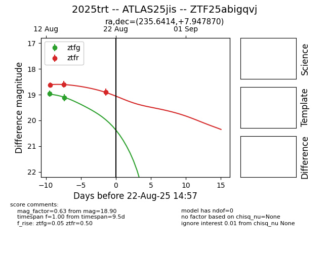

Target 2025trt at 2025-08-22 15:16, see:
FINK: fink-portal.org/ZTF25abigqvj
Lasair: lasair-ztf.lsst.ac.uk/objects/ZTF25abigqvj
ALeRCE: alerce.online/object/ZTF25abigqvj
TNS: wis-tns.org/object/2025trt
YSE: ziggy.ucolick.org/yse/transient_detail/2025trt
alt names
ZTF25abigqvj (ztf,alerce)
2025trt (tns,yse)
ATLAS25jis (atlas)
coordinates:
equatorial (ra, dec) = (235.6414,+7.94787)
galactic (l, b) = (15.7194,+45.23306)
photometry
last atlaso=18.64, ztfg=19.12, ztfr=18.90
3 atlaso, 2 ztfg, 3 ztfr detections
